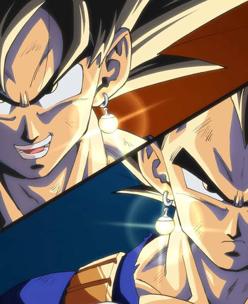

Vegito is an amazing Dragon Ball character because he is really unique. He is created everytime the 2 main characters who are goku and vegeta, put on special earring and fuse together. Vegito only stays for 1 hour before his fusion finishes or too much energy was used.
Vegito is an amazing character but he doesn't appear that much compared to the main chracters. But whenever he did
appear, he always happened to be really useful. Like the first time he appeared was in the Magin Buu saga, which is
about when some guy collected energy from strong warriors and created a pink villian named Majin Buu. He could have
won the fight but that wasn't the goal.
Another time he appeared was during the "Future Trunks Arc" which was where Vegeta's son, Trunks from the future needed help,
so Goku and Vegeta travelled through time with Trunks. The three warriors fought the two immortal villains for some time until these fused,
which made them really powerful. So to fight back Goku and Vegeta fuse into Super Saiyan Blue Vegito, which is a transformation that
gives lots of strenght and blue hair. In the end of the fight Trunks gained a new found power and sliced up the fused villain with his
glowing sword of power. To destroy the sliced up immortal villains, the leader of the universe destroyed the future timeline which was
a timeline that shouldn't have existed in the first place but that is explained earlier.
Those are the two times that Vegito appears in the animated series!

I think that Vegito is really cool and unique chracter, from his design to how he is accessible. He only shows up twice in the entire series but he performed beautifully both of those times. In my opinion I think Vegito might be my favorite character.